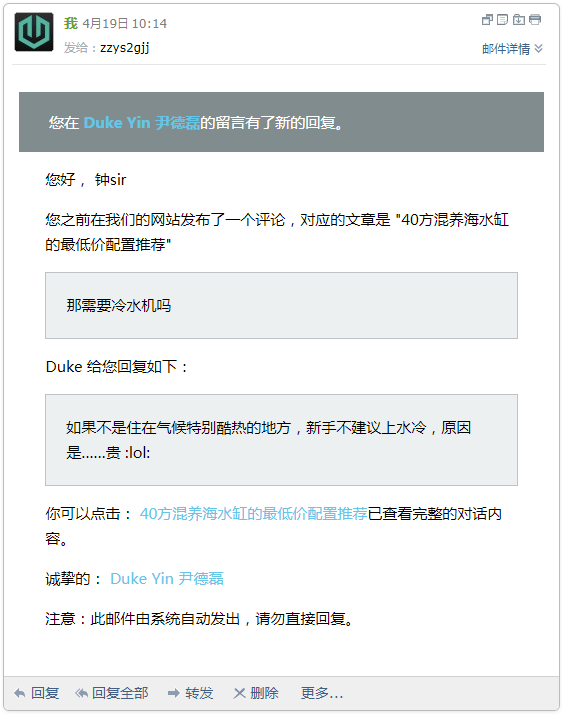

评论回复通知
主题内置了“评论回复功能”
当评论者在填写评论的时候填写了正确的Email地址，当有人回复他的评论——不论是站长或者其他人，他的Email地址就会收到一封邮件，告知有人评论，并且包含回复他的内容。

这个功能的重要性是让读者可以再次访问，避免评论之后无暇查看而错过了回复。
此功能要正确运行，需要服务器具备正常的Email功能，php mail()函数要能正确运行。
如果服务器不允许开启mail()功能，或者mail()功能不能正常发邮件，建议安装SMTP邮件插件，此类插件有很多，可在Worspress后台搜索“SMTP”，选择合适的安装即可。
设置正确的SMTP账号密码之后，服务器就可以借助外部SMTP服务器发送邮件了。